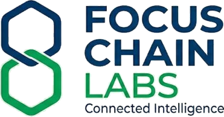

Cloud
Cloud architecture and deployment.
Scalable backends, APIs, authentication, data layers, observability, and deployment pipelines.

FocusChain Labs designs and ships cloud platforms, web and mobile apps, AI/ML workflow automation, predictive analytics, and dashboards that turn messy operations into measurable growth.
What is slowing the business down right now?
Where should intelligence show up for the team?
Which outcome should the system move first?
We turn ambiguous business problems into shipped products: secure cloud backends, polished apps, automated workflows, predictive models, and dashboards that leaders can actually run the business from.
Scalable backends, APIs, authentication, data layers, observability, and deployment pipelines.
Internal tools, customer portals, field apps, IoT-connected mobile experiences, and operational software.
We map legacy workflows, modernize the operating layer, and ship the systems teams actually adopt.
Document processing, routing, scoring, agentic workflows, approval flows, and human-in-the-loop AI.
Credit analyzers, demand forecasts, risk scoring, churn signals, and decision models built into the workflow.
Executive dashboards, funnel analytics, customer intelligence, and measurement layers that close the loop.
Data intake, scoring model, underwriting dashboard, and review workflow.
Device data, mobile control, cloud sync, alerts, and customer experience.
Content ops, lead capture, nurture automation, attribution, and sales handoff.
We do not force your problem into a fixed product. We shape the stack, workflow, automation, and dashboard around the outcome you need.
Tell us where the workflow breaks, what needs to be automated, or what insight your team cannot see yet. We will turn it into a practical build plan.
Email queries@focuschainlabs.com · Cloud · apps · automation · analytics · dashboards · lead funnels
Step into Command Center — a connected build for a service business that needs a credit analyzer, IoT mobile experience, predictive dashboard, and organic lead funnel automation. Choose the operating role, prioritize the build, then let the system automate the rest.
The Command Center lab shows how FocusChain turns a business problem into a cloud app, AI automation layer, predictive analytics, dashboard, and launch blueprint.
Whether the need is a cloud product, mobile app, AI workflow, predictive model, dashboard, or lead automation engine, we can shape a build sprint around the outcome your business needs next.